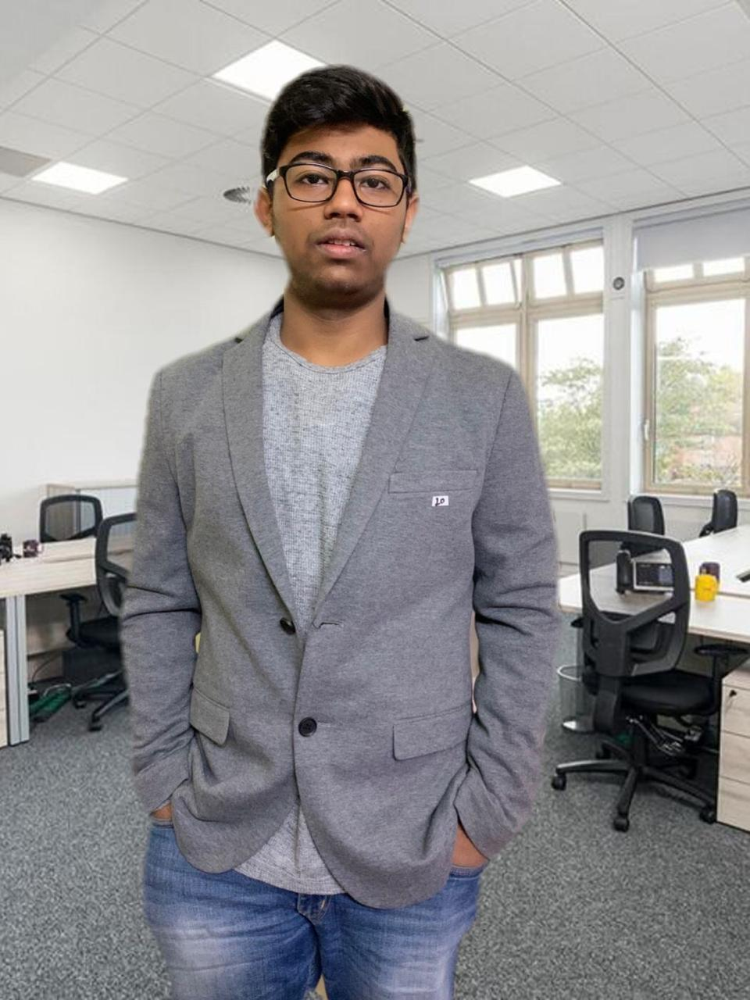
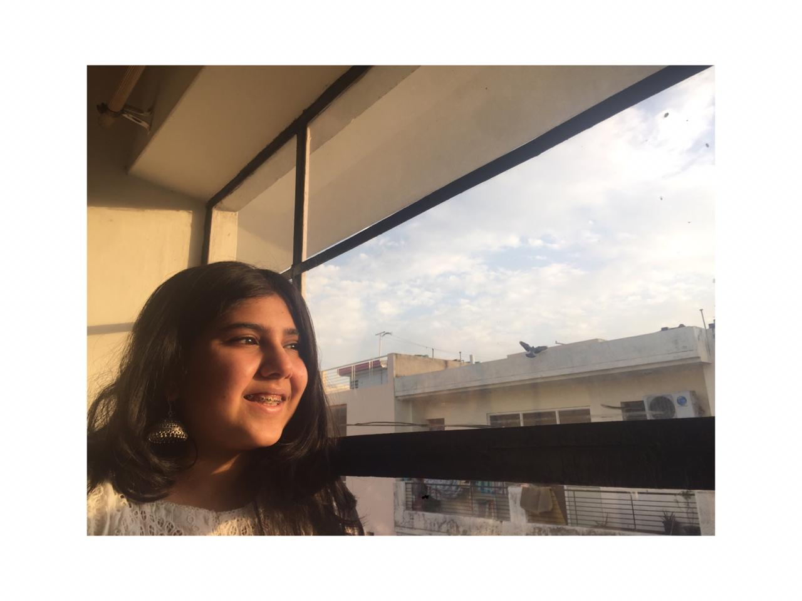

THE LEGENDARY TEAM
One of the enthusiastic speaker of our team. An exelled and a resourceful person. The rules would have to go
through him before becoming the policies of our green and sustainable city. He undertook city stimulation and designed the, map of the of city.
Recognized by his confident nature, Advit is really an asset to the team.
An important person of the team. Nidhi works on how to find ways for Developing sustainability in manufacturing which would inturn
make the city greener. all the intermediate goods would first need to get through her policies on manufacturing before becoming a final good.
Her effort has also led to a cleaner and greener environment in our city.
The major task of resource effeciency was undertaken by gunjan. She also had the resopsibility to ensure that every person in the city gets clean and
nutritious diet. As we know that most people in india suffer from malnutrition and hence lose thier lives. the importance of gunjan in the team is felt.
Anannt had the task of managing sewage and their treatment. Water supplies were also managed by anannt. The treatment of sewage would directly affect the
immune responses of the citizens. hence the importance of proper disposal of sewage is greatly felt. The methods of careful treatment of sewage were chosen by him.
Another enthusiastic speaker of our team, Ishan had the responsibility of managing the healthcare facilities of the city. In the midst of a pandemic, the importance
of healthcare facilities is hugely felt. He had the responsibility of managing whether proper kind of technology in the city had been developed to treat various various
patients. Sustainable architecture was undertaken by him.
Rishika, whos work on pollution free environment is as important as that of any us. pollution is a very important indicator of the health and lifestyle of people
living in a city. A polluted city is an indicator of lack of comittment of the people living there to make the city a better place. suitable levels of polution are declared by Rishika
and she is the person whcih incorporates methods to make the city a green place
Manya, another important member of our team, had the responsibility to ensure proper educational facilities. Education plays an important role in advancing sustainable development.
The children, as we know, are the future. Hence education plays a very vital role in the formation of a sustainable city.